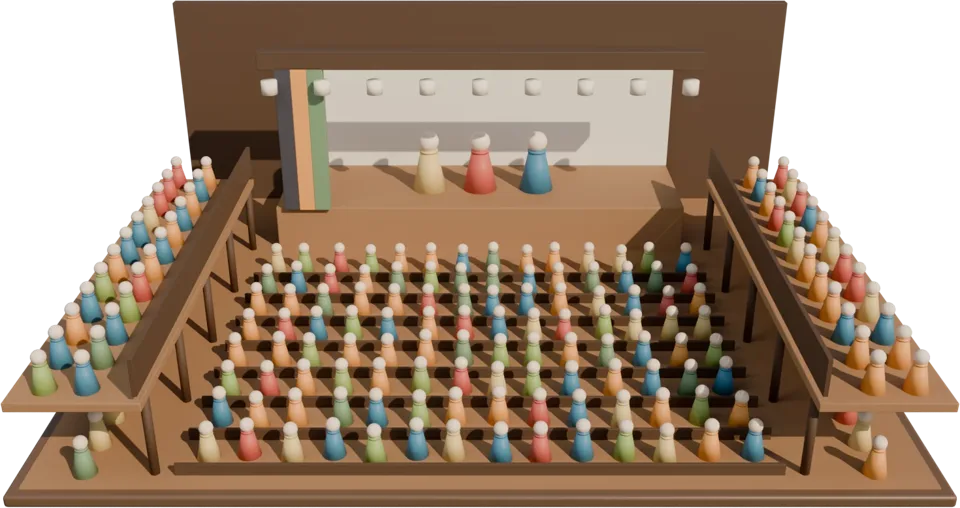
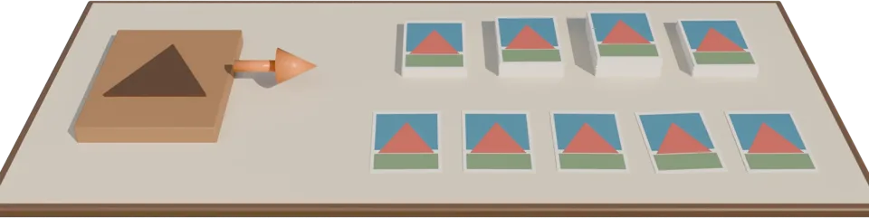
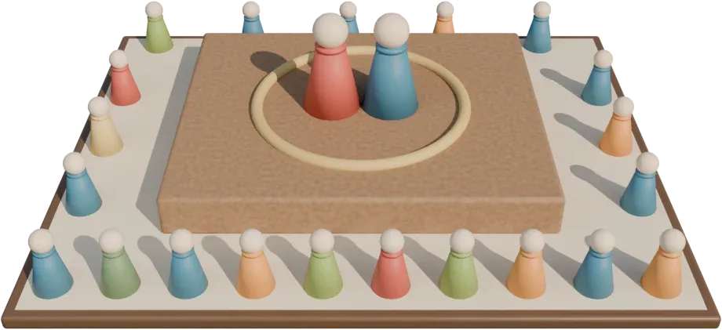
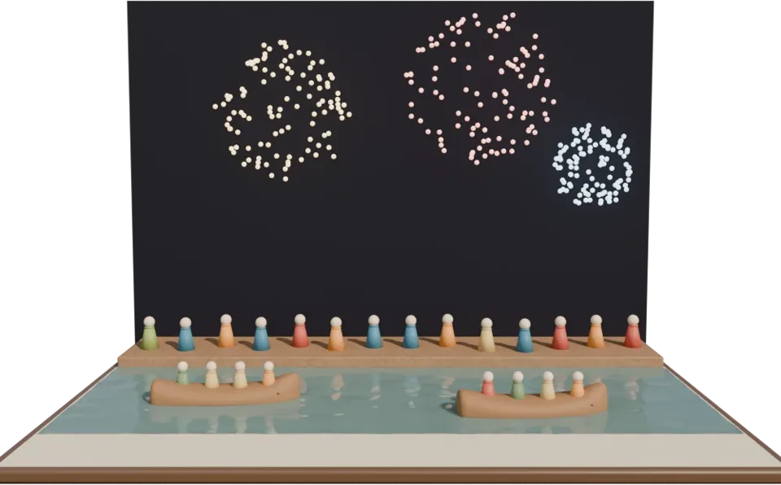
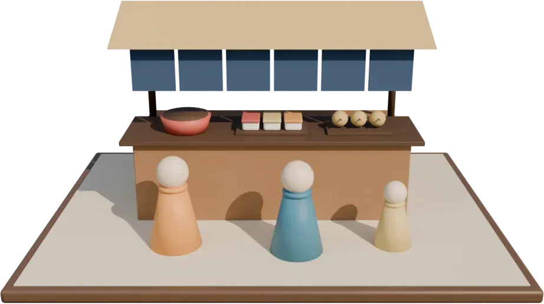

文字の大きさ
第2時町人の文化と、今に伝わる江戸の文化
つかむ調べるまとめる
教科書 p.156〜159
学習問題江戸時代には、どのような文化や学問が生まれたのだろう。
この時間のめあて江戸時代には、どのような文化が生まれ、今に伝わっているのだろう。
この時間のポイント
1芝居を楽しむ人々

芝居小屋のにぎわい（イメージの模型）
江戸や大阪などの大都市では、町人たちが中心となって新しい文化を生み出しました。人形浄瑠璃や歌舞伎は人々の楽しみとして広まり、近松門左衛門は、町人の姿を生き生きとえがいた芝居の台本を数多く残しました。
教科書で確かめようp.156 資料ア
2浮世絵は木版で大量に

1つの版木から、同じ絵をたくさん刷る（イメージの模型）
木版の技術で、色あざやかな浮世絵が大量につくられました。歌川広重の「東海道五十三次」や葛飾北斎の「富嶽三十六景」が人気を集め、後にはヨーロッパの画家たちにも大きな力をあたえました。松尾芭蕉は、味わい深い俳句を数多くつくりました。
教科書で確かめようp.156〜157 資料イ・ウ・エ・キ
3今に伝わる江戸の文化



交通が発達して、大都市で花開いた文化が地方へも広まりました。今のわたしたちの暮らしに根づいているものもたくさんあります。
教科書で確かめようp.158〜159
考えてみよう
- 江戸時代には、どのような文化が生まれたのだろう。中心になったのはだれだろう。
- 身近な地域にも、江戸時代から伝わる文化があるか探してみよう。
動画で見てみよう（NHK for School）
NHKのページが開きます。最初に確認の画面が出たら、おうちの人といっしょに進めてね。
- 縄文
- 弥生
- 古墳
- 飛鳥
- 奈良
- 平安
- 鎌倉
- 室町
- 安土桃山
- 江戸
- 明治
- 大正
- 昭和
- 平成
- 令和